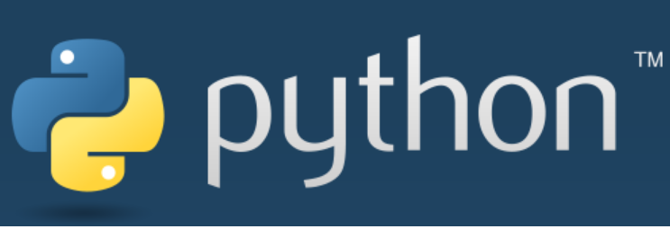

2017-12-28 Python for me these days¶
I started to contribute to the python documentation translation to french. This is where I think I can do usefull open source software contribution. I hope one day, I will contribute to cpython directly.
I started developping with PHP and later with symfony. Discovering such a stack - framework concept, ORM, microservices - was really exciting. but once I discovered Python, then django. It became my favourite programming language/framework then I did a lot of web development. I learn many things. Now I focus a lot on Flask. This is mainly because we use it at jaccede (my current job).
And oh, with this job I learnt a lot about distributed softwares, sqlalchemy, performance issues for the web using high level python/flask tools for redis caching for the real world of production services.
Two more things about my exiting experience of python world is that i wrote an aws lambda program that produces all sizes for our user images. It was a really great project. More recently I had the joy to play around with crossbar.io/autobahn that is a message broker. We use it for our messaging system.